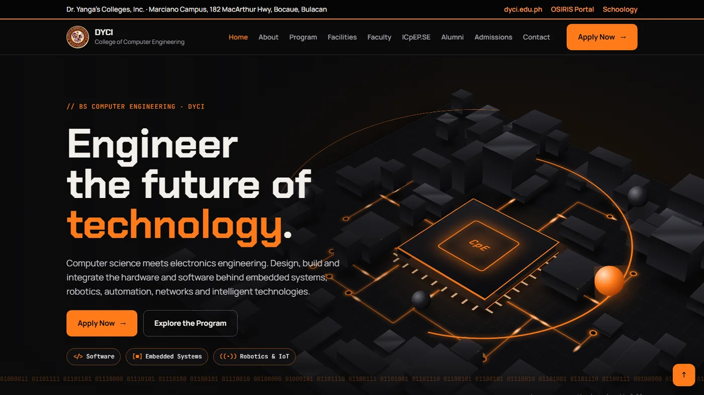
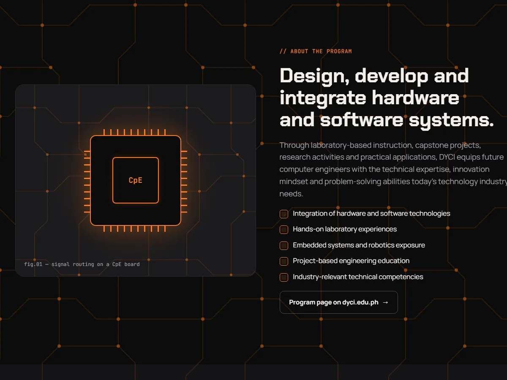
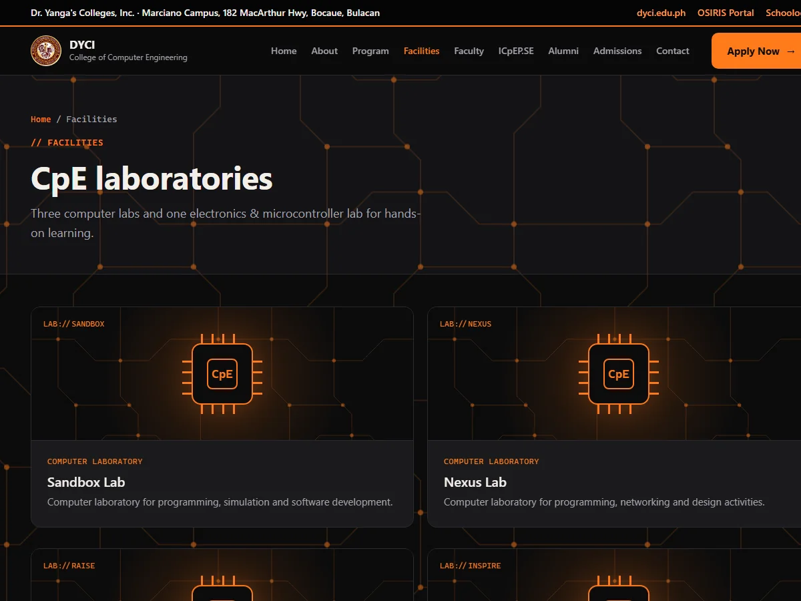
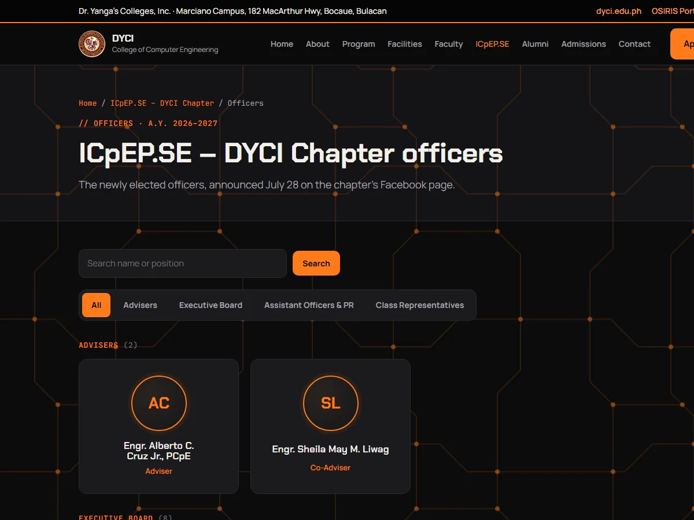

Work DYCI Computer Engineering website
Website
DYCI Computer Engineering website
A dark, circuit-board themed site for a college Computer Engineering program, with a 3D hero built in pure CSS and no JavaScript.

Overview
A website for the BS Computer Engineering program at Dr. Yanga’s Colleges and the ICpEP.SE – DYCI student chapter. It presents the program, laboratories, faculty, officers and admissions in one dark “circuit board” world with orange accents, using the college’s TECH seal as its logo.
It is written in plain PHP, HTML and CSS with no JavaScript. The hero is a 3D circuit board drawn entirely with CSS transforms, and it tilts toward your cursor. Tabs, selectable career cards and the admissions steps are all built with CSS only.
Highlights
- Home page with a 3D CSS circuit board that follows the cursor, using hidden hover zones instead of scripts.
- Program overview with six study areas, nine career paths shown as selectable cards, and a four-step admissions guide.
- Pages for four laboratories, ten faculty members with search, and a news and events section.
- ICpEP.SE – DYCI officers page with search and group filters handled on the server.
- All content is kept as data in one PHP file, so people and events can be updated without touching the page code.
- Inquiry form that saves messages privately on the server, with a hidden spam trap and validation.
- Layout adapts to phones with a CSS-only mobile menu.
More from this project


